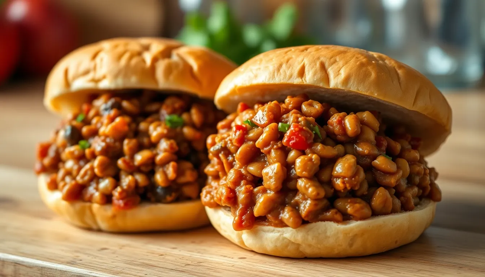

Lentil Sloppy Joes
Prep time: 10 minutes - Cook time: 30 minutes - Total time: 40 minutes
Estimated total cost: $8.20 - Estimated cost per serving: $2.05 - Serves: 4

Ingredients
- 1 cup dry lentils, rinsed — $0.90
- 1 small onion, diced — $0.80
- 2 cloves garlic, minced — $0.20
- 1 tablespoon oil — $0.20
- 1/2 cup tomato sauce or ketchup — $0.60
- 1 tablespoon mustard — $0.10
- 1 tablespoon brown sugar or maple syrup — $0.20
- 1 teaspoon chili powder or smoked paprika — $0.15
- 1/2 teaspoon salt — $0.05
- 2 1/2 cups water — $0.00
- 4 sandwich buns or sturdy slices of bread — $1.80
- Optional: pickle slices or shredded cabbage — $0.40
Estimated ingredient total: $5.00 to $5.40
Displayed planning estimate: $8.20
Detailed Instructions
- Rinse the lentils and set them aside.
- Heat the oil in a medium saucepan over medium heat.
- Add the onion and cook for 4 to 5 minutes until softened.
- Add the garlic and cook for 30 seconds.
- Stir in the lentils, tomato sauce or ketchup, mustard, sweetener, chili powder or smoked paprika, salt, and water.
- Bring the mixture to a boil, then reduce the heat to low.
- Simmer uncovered for 25 to 30 minutes, stirring occasionally, until the lentils are soft and the mixture is thick.
- If it dries out too quickly, add a splash of water.
- Taste and adjust the seasoning.
- Toast the buns or bread if desired.
- Spoon the lentil mixture onto the buns and add optional toppings.
- Serve warm.
Helpful Notes
- These are messy in a good way, so sturdy buns help.
- Leftover filling works well over baked potatoes or rice.
- Brown lentils hold their shape best here.
Price Note
Ingredient prices can vary by store, brand, and region, so these are planning estimates rather than exact totals.